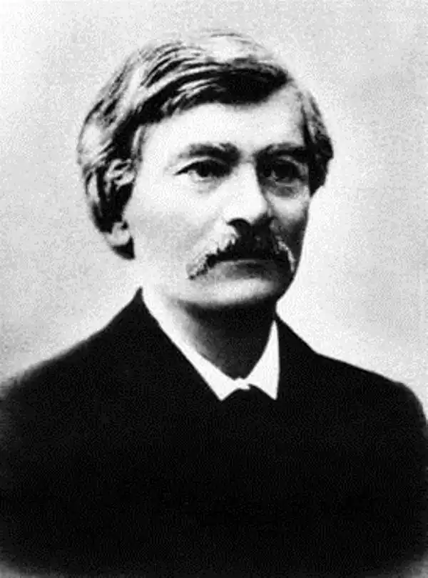

Народився 18 січня 1834 року в містечку Махнівці, Махнівського повіту Київської губернії (тепер Козятинський район, Вінницької області), у родині зубожілих, безземельних польських шляхтичів, генеалогічно споріднених з Правобережною Україною.
Навчався у в Одесі, Рішельєвському ліцеї, вищу освіту здобув у Київському університеті Св. Володимира. Спершу він закінчив там медичний факультет, бо на здобутті фаху лікаря наполягала його мати, навіть попрацював після того деякий лікарем практично. А потім успішно закінчив історико-філологічний факультет.
Під час навчання входив у таємну організацію польської молоді в університеті — Тройницьку спілку. Ще в студентські роки Антонович читав козацькі рукописи, твори Тараса Шевченка, Пантелеймона Куліша, Аполлона Скальковського, етнографічні збірки, які вплинули на його життєву та наукову орієнтацію. У студентській корпорації, що, в основному, складалася з польської молоді, наприкінці 50-х років XIX століття Антонович висловлює думку про те, що дивно жити в краю, не знаючи ні його історії, ні людей. Щоб побачити народ, яким він є, Антонович з товаришами на канікулах подорожує по Волині, Поділлю, Холмщиною, Київщиною, Катеринославщиною, Херсонщиною. Після закінчення навчання на медичному факультеті у 1855—1856 рр. працював лікарем в Чорнобилі та в Бердичеві. У 1861 р. перейшов у православ'я, взяв шлюб з Варварою Іванівною Міхельс і почав працювати викладачем латинської мови в 1-й київській гімназії. У 1861 році приєднався до так званих "хлопоманів". Один з організаторів Київської громади, очолює в ній "хлопоманський" гурток, члени якого вважали, що український народ має право на своє національне відродження. Продовжуючи просвітницькі традиції кирило-мефодіївців, В. Антонович і його однодумці стояли вже на позиціях якщо не відвертого матеріалізму, то в усякому разі еволюціонізму і позитивізму. Критичне ставлення до чинних у царській Росії порядків, засудження самодержавства, сповідування принципів конституціоналізму, парламентаризму і федералізму спонукало громадівців до просвітницької діяльності і пропаганди наукового світогляду. Саме ці чинники, за переконанням Антоновича, повинні змінити суспільство. З метою пропагування своїх поглядів громадівці відкривали недільні школи. Там навчали читання, письма і арифметики. Становленню Антоновича як історика сприяло його знайомство з Михайлом Максимовичем та Миколою Іванішевим. Першу історичну працю Антонович написав 1863 року. Це була вступна розвідка "О происхождении казачества" до "Архива Юго-Западной России". 1870 року за дисертацію "Последние времена казачества на правом берегу Днепра по актам 1679–1716 гг." Антонович дістає титул магістра руської історії, його призначають штатним доцентом на кафедрі російської історії Університету Св. Володимира. 1878 року після захисту праці "Очерк истории Великого княжества Литовского до смерти великого князя Ольгерда" йому присвоїли ступінь доктора російської історії, він стає дійсним професором російської історії Київського університету, яким лишається по 1890 рік. Того року йде Антонович на пенсію й проживає в Києві до смерті. 1880 року Антоновича обирають на декана історико-філологічного факультету, на цій посаді він залишається до 1883 року. Мав чин статського радника. Його лекції з історії Галицької Русі, Великого князівства Литовського, українського козацтва, джерелознавства та допоміжних дисциплін, разом з апробованими в університеті історичними семінарами, сприяли широкому залученню на ниву дослідницької роботи молодих істориків. Антонович був також одним із засновників товариства Нестора-літописця при університеті Св. Володимира, а 1881 року очолив це товариство. У другій половині 1890-х років Володимир Антонович разом із відомим письменником і громадським діячем Олександром Кониським заснував всеукраїнську політичну організацію, що мала об'єднати українців усієї Російської імперії. 1897 року відбувся установчий з'їзд цієї організації, до якої 1901 року приєдналася й київська "Громада". Сама організація проіснувала до її перетворення 1904 року на "Українську демократичну партію". Останні роки життя Володимир Антонович працював у Ватиканському архіві, де знаходив багато матеріалів з історії України, збирав документальні відомості для історико-географічного словника України (залишився невиданим), продовжував активно займатися археологічними дослідженнями. За рік до смерті почав диктувати Дмитрові Дорошенку (згодом відомому українському історикові) автобіографічні "Спомини". Помер Антонович 21 березня 1908 року в Києві.